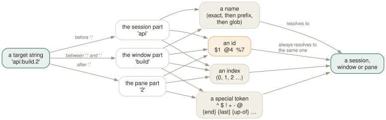

Day 07
The command language
Parsing, quoting, and how to name any pane on the server.
By the end of today you can
- name any session, window or pane unambiguously, from a shell or from inside tmux
- chain commands with semicolons and survive the shell's quoting rules
- know when to use a name, an index, or an id — and why scripts must use ids
Everything is a command, and commands have a grammar
Six days in, you have been running tmux commands through three different doors: key bindings, the C-b: prompt, and the shell. They are the same commands. Today is the grammar they share, because from here on the course stops being about keys and starts being about writing things down.
A command is a name, some flags, and some arguments:
$ tmux set-option -g status-style bg=cyan
# ^^^^^^^^^^ ^^ ^^^^^^^^^^^^ ^^^^^^^
# name flag argument argument
Most commands have an alias (set, neww, splitw, lsp) and tmux also accepts any unambiguous prefix, telling you off when it is not:
$ tmux n
ambiguous command: n, could be: new-session, new-window, next-window
tmux list-commands prints every command with its synopsis; tmux list-commands split-window prints just one. That is a faster lookup than the man page when you know the command and have forgotten a flag.
Semicolons, and the two levels of parsing
Commands can be chained. Inside tmux the separator is a bare semicolon; from a shell it has to survive the shell first:
# inside tmux (C-b : or ~/.tmux.conf)
neww ; splitw -h ; splitw -v
# from a shell — escape it, or quote it
$ tmux neww \; splitw -h \; splitw -v
$ tmux neww ';' splitw -h
Inside a config file or a binding, a group of commands can also be wrapped in braces, which avoids escaping entirely and can span lines:
bind C-t {
new-window -n scratch
split-window -h
select-pane -t 0
}
Quoting inside tmux follows familiar rules: single quotes are literal, double quotes expand $VARIABLES from the tmux global environment and ~, # starts a comment, and a trailing \ continues a line.
Targets: how to name things
Nearly every command takes -t (and sometimes -s for a source). The value is a target string with up to three parts:
session : window . pane
| | |
api:build.2 | └── pane index, id, or token
api:build └────────── window index, name, id, or token
api: └────────── that session's current window
:build └────────── window 'build' of the current session
:.2 └────────── pane 2 of the current window

$1, @4, %7) are assigned once and never change for the life of the server. Interactive use wants the top rows; scripts want the bottom one.Each part is resolved in a defined order, and knowing the order stops the surprises:
- An id, if it starts with a sigil.
$1a session,@4a window,%7a pane. Unique for the life of the server. - A special token. For windows:
^lowest,$highest,!last,+next,-previous,@current — with long forms{start},{end},{last}and so on, and offsets like:+2. For panes there are also{top},{bottom-right},{up-of},{left-of}and friends. - An index, if it is a number.
- A name — exact match first, then “starts with”, then a glob pattern. Prefix
=to demand an exact match:-t =testwill not matchtesting.
$ tmux display -p -t 'api:{end}' '#{window_name}' # highest-numbered window
$ tmux display -p -t ':+' '#{window_name}' # next window along
$ tmux display -p -t ':.{bottom}' '#{pane_id}' # bottom pane, this window
$ tmux send-keys -t '%7' 'make test' Enter # a specific pane, forever
Ids, and why scripts need them
Sessions, windows and panes each get an id when they are created: $0, @0, %0, counting up forever. They are never reused and never renumbered. A pane's own id is in its environment as $TMUX_PANE, which is how a program inside a pane can address itself.
$ tmux lsp -a -F '#{pane_id} #{session_name}:#{window_index}.#{pane_index} #{pane_current_command}'
%0 api:1.0 zsh
%1 api:1.1 vim
%3 api:2.0 tail
%2 infra:1.0 zsh
Note %3 sitting between %1 and %2 in position but not in id — panes were created in a different order from where they ended up. Index tells you where a pane is now; id tells you which pane it is.
$ pane=$(tmux splitw -d -P -F '#{pane_id}' -t api:1)
$ tmux send-keys -t "$pane" 'tail -F log' Enter
Listing, filtering, and the shape of scripts
The list-* commands all take -F for the output format and -f for a filter — both of which are formats, tomorrow's topic. Even without knowing the format language yet, the shape is worth seeing now:
$ tmux ls -F '#{session_name}' # names, one per line
$ tmux lsw -a -f '#{window_zoomed_flag}' # only zoomed windows
$ tmux lsp -a -f '#{m:*vim*,#{pane_current_command}}' -F '#{pane_id}'
And display-message -p is the general-purpose “evaluate this and print it” command — the echo of tmux:
$ tmux display -p '#{session_name} has #{session_windows} windows'
api has 4 windows
New vocabulary
Commands
| Command | Does |
|---|---|
tmux neww \; splitw -h | Two commands in one invocation. Note the escaped semicolon. |
display-message -p '#{pane_id}' | Print a value to stdout instead of the status line. |
list-panes -a | Every pane on the server, not just this window. |
list-windows -a | Every window on the server. |
list-sessions -F '#{session_name}' | One field per line — the shape scripts want. |
list-commands | Every command tmux knows, with its synopsis. Alias lscm. |
list-commands neww | The synopsis for one command. |
Options
| Option | Does |
|---|---|
command-alias | Server option: an array of your own command aliases. |
Today's configappend to ~/.tmux.conf
Command aliases live in a server option array. Pick indices well above the built-ins (0-99 are taken) so you do not shadow anything. Aliases are expanded at parse time, which means they work in bindings and config files as well as at the prompt.
set -s command-alias[100] zoom='resize-pane -Z'
set -s command-alias[101] panes='list-panes -a -F "#{pane_id} #{session_name}:#{window_index}.#{pane_index} #{pane_current_command}"'
Reload with tmux source-file ~/.tmux.conf and watch for errors in the status line.
Drillsdo these in a real terminal, today
Self-check
Answer out loud first, then unfold.
Why does tmux neww; splitw in a shell do something different from tmux neww \; splitw?
The first is parsed by the shell: it runs tmux neww, then runs the separate command splitw, which is not a program and fails. The second escapes the semicolon so it reaches tmux, which then treats it as its own command separator. Inside tmux — at the command prompt or in a config file — no escaping is needed, because the shell is not involved.
A script does tmux kill-pane -t 1 and kills the wrong thing. Why?
Two reasons, both about ambiguity. First, a bare 1 is not obviously a pane: tmux will consider window 1, or session 1, if the current window has no pane 1. Fully qualify it as -t :.1 to mean “pane 1 of the current window”.
Second, pane indices are positional and shuffle when panes are killed. A script that resolves #{pane_id} once and then uses %7 thereafter cannot be surprised — ids are unique for the life of the server and never move.
What does -t api:build.2 mean, and which parts can be left out?
Session api, window named build, pane index 2. Everything is optional: with no : the current session is assumed, with no . the window's active pane is used, and an empty window part (api:) means that session's current window. tmux also guesses the type you need from the command, which is convenient interactively and treacherous in scripts.
What is -t '{mouse}' for?
It resolves to the pane, window or session where the most recent mouse event happened, and it only makes sense inside a mouse binding. It is why the default MouseDown1Pane binding is select-pane -t = \; send-keys -M — = being the short form of {mouse}. The same trick with {marked} (short form ~) addresses the marked pane, which Day 12 puts to work.
Cheat sheet
session:window.pane # any part may be omitted
$1 @4 %7 # ids: unique forever, never move — use these in scripts
:^ :$ :! :+ :- :@ # first last previous next prev current window
:.{top} :.{bottom-right} # pane by position; {up-of} {left-of} relative
-t =name # exact name match (no prefix, no glob)
{mouse} = / {marked} ~ # where the mouse was / the marked pane
tmux a \; b \; c # chain from a shell (escape the ;)
a ; b ; c # chain inside tmux; { } groups multi-line
tmux display -p '#{pane_id}' # evaluate and print
tmux lsp -a -F '...' -f '...' # list, formatted, filtered
tmux splitw -d -P -F '#{pane_id}' # create and print what you created
Everything through Day 07
Keys
| Key | Does |
|---|---|
| C-bd | Detach this client. The session keeps running. |
| C-b$ | Rename the current session. |
| C-b? | List every key binding. q to leave. |
| C-b: | Open the tmux command prompt. |
| C-bt | Show a clock — a harmless way to prove the prefix works. |
| C-bC-b | Send a literal C-b to the program in the pane. |
| C-bc | Create a window at the lowest free index. |
| C-b, | Rename the current window — and pin the name. |
| C-bn | Next window by index. |
| C-bp | Previous window by index. |
| C-bl | Back to the last window you were in. The one to actually learn. |
| C-b0 | Jump straight to window 0 (likewise 1 … 9). |
| C-b' | Prompt for a window index — for windows above 9. |
| C-bw | Choose a window from an interactive tree with previews. |
| C-b& | Kill the current window, after a confirmation. |
| C-b. | Move the current window to a different index. |
| C-bi | Flash some information about the current window. |
| C-b% | Split left/right. The |-shaped key gives you a |-shaped border. |
| C-b" | Split top/bottom. |
| C-bLeft | Move to the pane to the left (likewise Right, Up, Down). |
| C-bo | Next pane in creation order. |
| C-b; | The previously active pane — the C-bl of panes. |
| C-bq | Flash the pane numbers; press a digit while they show to jump there. |
| C-bz | Zoom: this pane fills the window. Press again to restore. |
| C-bx | Kill this pane, after a confirmation. |
| C-bSpace | Cycle to the next preset layout. |
| C-bM-1 | even-horizontal — side by side in a row. |
| C-bM-2 | even-vertical — stacked in a column. |
| C-bM-3 | main-horizontal — one big pane on top. |
| C-bM-4 | main-vertical — one big pane on the left. |
| C-bM-5 | tiled — a grid. |
| C-bE | Spread the current pane and its neighbours out evenly. |
| C-bC-Left | Resize by one cell (hold to repeat). M-Left does five. |
| C-b{ | Swap this pane with the previous one; C-b} with the next. |
| C-bC-o | Rotate every pane through the layout; C-bM-o rotates back. |
| C-b* | Open a floating pane over the window — hovers above the layout. |
| C-b[ | Enter copy mode at the bottom of the history. |
| C-bPageUp | Enter copy mode already scrolled one page up. |
| C-b] | Paste the most recent buffer into this pane. |
| C-b= | Choose which buffer to paste, from a list with previews. |
| C-b# | List the paste buffers. |
| C-b- | Delete the most recent buffer. |
| q | In copy mode: leave. (Escape in emacs mode.) |
| /? | vi mode: search forward / backward; n and N repeat. |
| C-sC-r | emacs mode: incremental search forward / backward. |
| Space | vi mode: start a selection. C-Space in emacs mode. |
| v | vi mode: toggle rectangle (block) selection. R in emacs mode. |
| Enter | vi mode: copy the selection and leave. M-w in emacs mode. |
| gG | vi mode: top / bottom of the history. |
| C-bC | Customize mode: browse and change every option and key, with descriptions. |
| C-bR | Reload ~/.tmux.conf — after you add today's binding. |
| C-bs | Choose a session from the tree — with previews, tagging and filtering. |
| C-b( | Switch this client to the previous session. |
| C-b) | Switch this client to the next session. |
| C-bL | Switch back to the last session. The C-bl of sessions. |
| C-bD | Choose a client from a list and detach it. |
| C-b$ | Rename the current session. |
Commands
| Command | Does |
|---|---|
tmux | Start the server if needed and create a session, attached. |
tmux new -s work | Create a session named work. |
tmux new -A -s work | Attach to work, creating it only if absent. |
tmux ls | List sessions on this server. Alias for list-sessions. |
tmux attach -t work | Attach this terminal to work. |
tmux attach -d -t work | Attach, detaching any other client first. |
tmux detach | Detach the current client, from inside or by target. |
tmux rename-session api | Rename the current session. |
tmux kill-session -t work | Destroy a session and everything in it. |
tmux kill-server | Destroy every session. The nuclear option. |
new-window | Create a window. Alias neww. |
new-window -n logs | Create it with a fixed name. |
new-window -c ~/src/api | Create it with that working directory. |
new-window -d | Create it but do not switch to it. |
new-window -a -t 2 | Insert after window 2, shifting the rest along. |
rename-window api | Rename the current window. |
select-window -t :3 | Switch to window 3 of the current session. |
last-window | Switch to the previously current window. |
kill-window -t :logs | Kill a window by name. |
list-windows | List windows in the session. Alias lsw. |
choose-tree -w | The interactive picker behind C-bw. |
split-window -h | Split left/right. Alias splitw. |
split-window -v | Split top/bottom. The default if neither is given. |
split-window -c ~/src | Start the new pane in that directory. |
split-window -l 30% | Give the new pane 30% of the space (-l 20 for cells). |
split-window -b | Put the new pane before — above or to the left of — the old one. |
split-window -f -h | Split the full window height, not just the current pane. |
select-pane -L | Move to the pane on the left (-R -U -D likewise). |
select-pane -t 2 | Move to pane 2 of this window. |
last-pane | Back to the previously active pane. |
resize-pane -Z | Toggle zoom. |
resize-pane -x 100 -y 30 | Resize to an absolute size, cells or %. |
select-layout tiled | Apply a named layout. |
select-layout -E | Spread evenly (what C-bE runs). |
select-layout -o | Undo the most recent layout change. |
list-panes | List panes with index, size and command. Alias lsp. |
kill-pane -a | Kill every pane except this one. |
swap-pane -D | Swap with the next pane, keeping focus behaviour sane. |
copy-mode | Enter copy mode; -u starts a page up, -e exits at the bottom. |
send-keys -X begin-selection | How every copy-mode key is implemented. -X means “to the mode”. |
list-buffers | Show the buffer stack. Alias lsb. |
set-buffer "text" | Put a literal string into a buffer from a script. |
load-buffer file | Read a file into a buffer (- for stdin). |
save-buffer file | Write a buffer out to a file (- for stdout). |
show-buffer | Print the newest buffer. |
paste-buffer -t :1.0 | Paste into a specific pane, not necessarily this one. |
delete-buffer -b name | Remove one buffer. |
capture-pane -p -S -3000 | Dump the last 3000 lines of history to stdout. |
clear-history | Throw away a pane's scrollback. Alias clearhist. |
set-option -g name value | Set a global session option. Alias set. |
set-option -w name value | Set a window option (for the current window). |
set-option -p name value | Set a pane option (for the current pane). |
set-option -s name value | Set a server option. |
set-option -u name | Unset, so the value is inherited again. |
set-option -a name value | Append to a string or style option instead of replacing it. |
show-options -g | Show global session options. Alias show. |
show-options -A | Show them including inherited values, marked with *. |
show-options -gv history-limit | Print just the value of one option. |
source-file ~/.tmux.conf | Run a file of tmux commands now. Alias source. |
customize-mode | The interactive option browser behind C-bC. |
new-session -d -s api | Create a session in the background and stay where you are. |
new-session -A -s api | Attach if it exists, create if it does not. |
new-session -c ~/src/api -s api | Create with a starting directory. |
switch-client -t api | Move this client to another session, without detaching. |
switch-client -l | Back to the previous session. |
has-session -t api | Exit 0 if it exists. The if in every wrapper script. |
attach-session -d -t api | Attach here and detach whoever else was looking. |
list-clients | Which terminals are attached to what. Alias lsc. |
detach-client -s api | Detach every client from that session. |
kill-session -a | Kill every session except the current one. |
choose-tree -Zs | The session picker behind C-bs. |
tmux neww \; splitw -h | Two commands in one invocation. Note the escaped semicolon. |
display-message -p '#{pane_id}' | Print a value to stdout instead of the status line. |
list-panes -a | Every pane on the server, not just this window. |
list-windows -a | Every window on the server. |
list-sessions -F '#{session_name}' | One field per line — the shape scripts want. |
list-commands | Every command tmux knows, with its synopsis. Alias lscm. |
list-commands neww | The synopsis for one command. |
Options
| Option | Does |
|---|---|
automatic-rename | Window renames itself after the running command. On by default. |
automatic-rename-format | The format used when it does. Defaults to the pane's command. |
allow-rename | Whether a program in the pane may rename the window by escape sequence. |
main-pane-width | Width of the big pane in the main-vertical layouts. Accepts %. |
main-pane-height | Height of the big pane in the main-horizontal layouts. |
tiled-layout-max-columns | Cap the columns in the tiled layout; 0 means no cap. |
mode-keys | vi or emacs key bindings inside copy mode. Default emacs. |
history-limit | Lines of scrollback kept per pane. Default 2000, which is stingy. |
copy-command | Shell command that bare copy-pipe pipes to — your clipboard tool. |
set-clipboard | Whether tmux sets the terminal's clipboard with OSC 52. |
word-separators | What counts as a word boundary for w and b. |
wrap-search | Whether searches wrap around the end of the history. On by default. |
base-index | Index the first window gets. Default 0. |
pane-base-index | Index the first pane gets. Default 0. A window option. |
renumber-windows | Close the gaps in window indices when one is killed. |
escape-time | Milliseconds tmux waits to decide whether Escape began a key sequence. |
focus-events | Pass terminal focus in/out through to the programs in panes. |
display-time | How long status line messages stay up. 750 ms by default. |
default-terminal | The $TERM new panes get. Must be a screen/tmux derivative. |
detach-on-destroy | What a client does when its session dies. off moves it to another session instead. |
destroy-unattached | Destroy a session once the last client leaves. Off by default, and rightly. |
default-size | Size for sessions created detached, when no client dictates one. |
window-size | Whether a window sizes to the largest, smallest or latest attached client. |
aggressive-resize | Size each window to the clients actually viewing it, not the whole session. |
command-alias | Server option: an array of your own command aliases. |